Dataset Summary
2train images
2val images
38train retained objects
38val retained objects
Split Summary
| split | images | objects | positive_images_any_retained_object | negative_images_no_retained_objects | objects_per_image_mean |
|---|---|---|---|---|---|
| train | 2 | 38 | 2 | 0 | 19.00 |
| val | 2 | 38 | 2 | 0 | 19.00 |
Label category object-count distribution
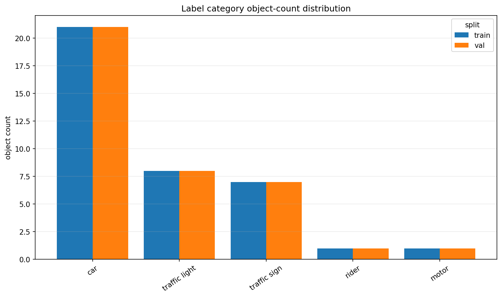
Images per class
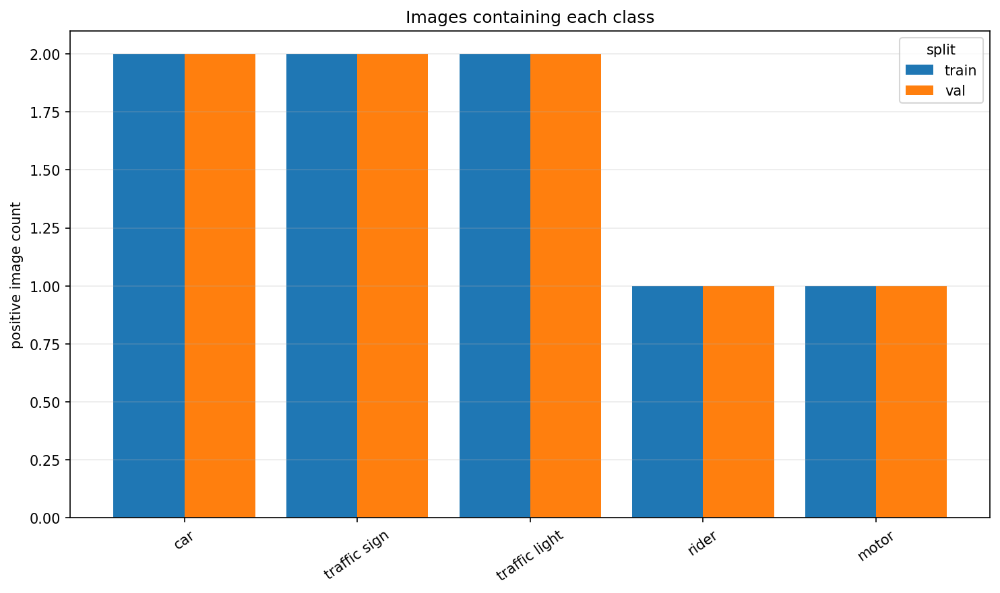
Objects per image
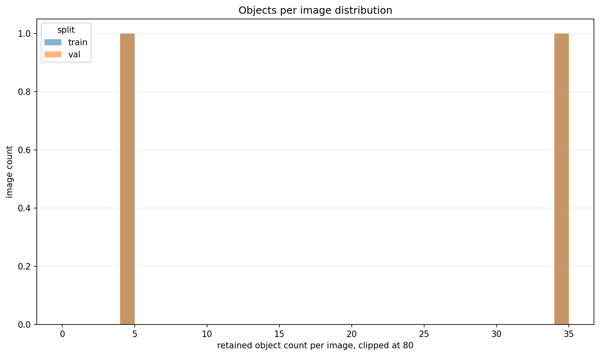
Average bounding-box area by class
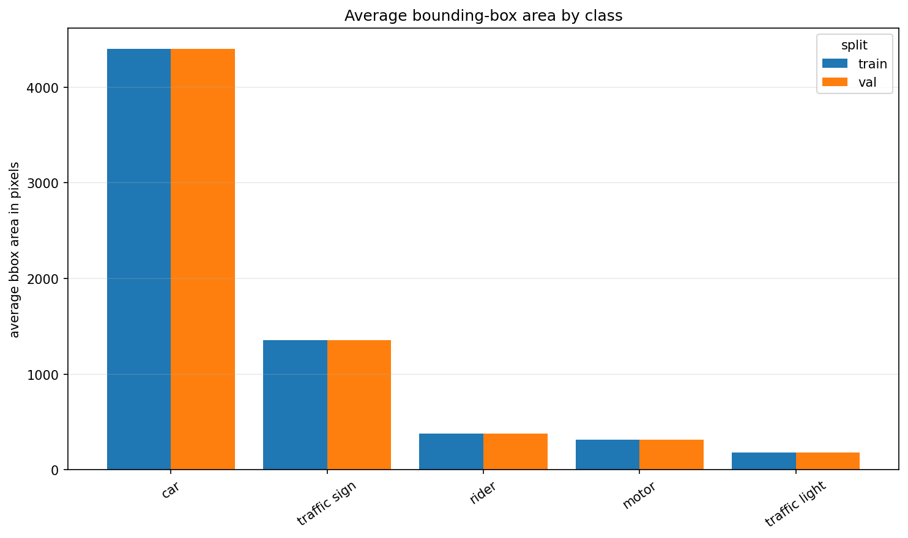
Bounding-box area distribution
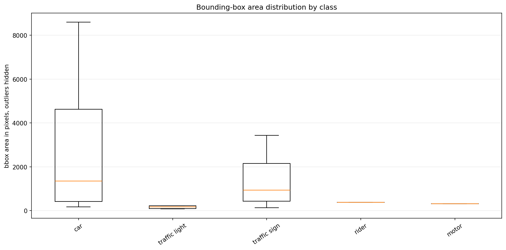
Train/val class drift
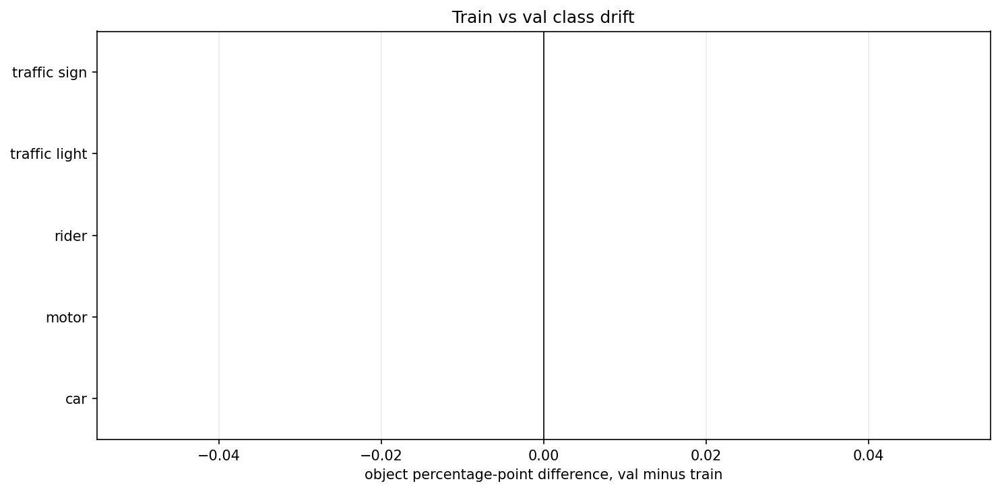
Train object center density
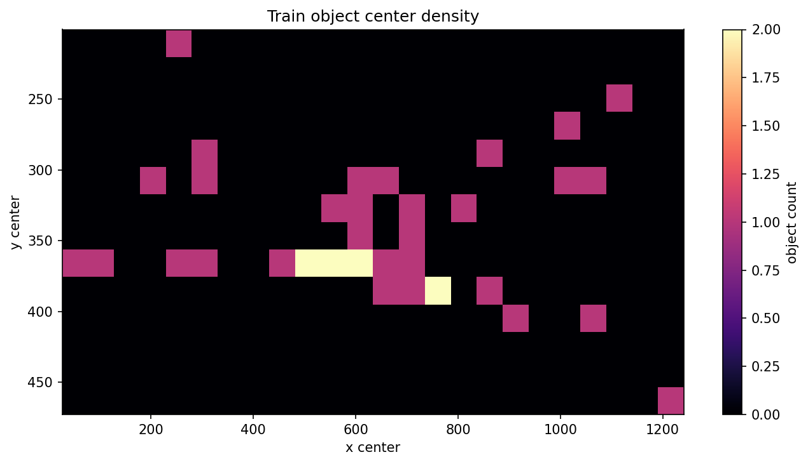
Train object center density by class
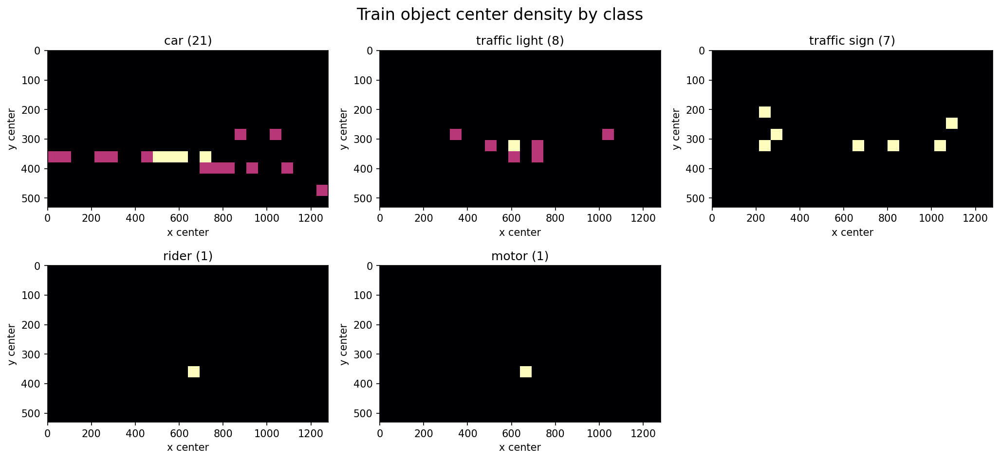
Val object center density
Train per-class positive vs negative images
Val per-class positive vs negative images
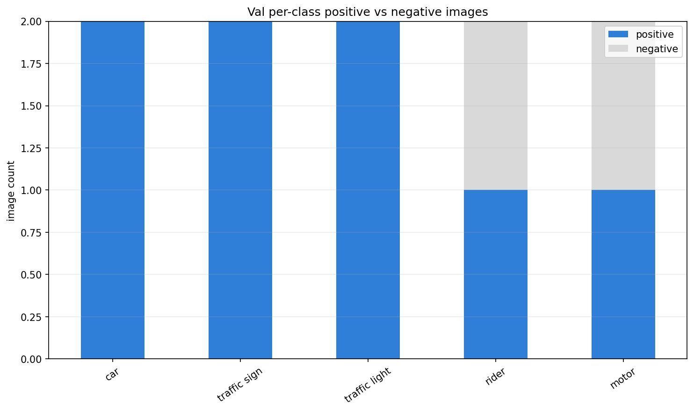
Attribute Distributions By Class
Each heatmap row is normalized within one label category.
Train weather condition by class
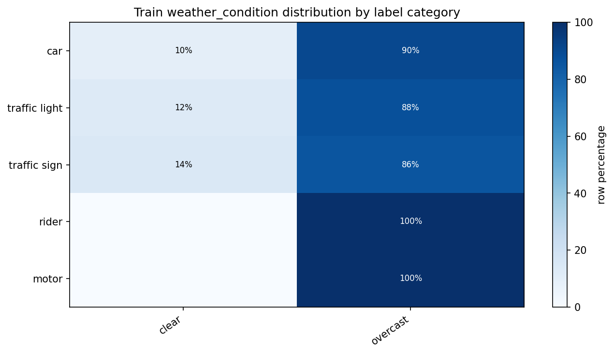
Train scene category by class
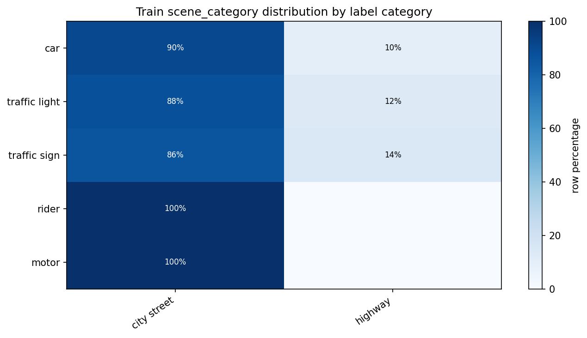
Train time of day by class
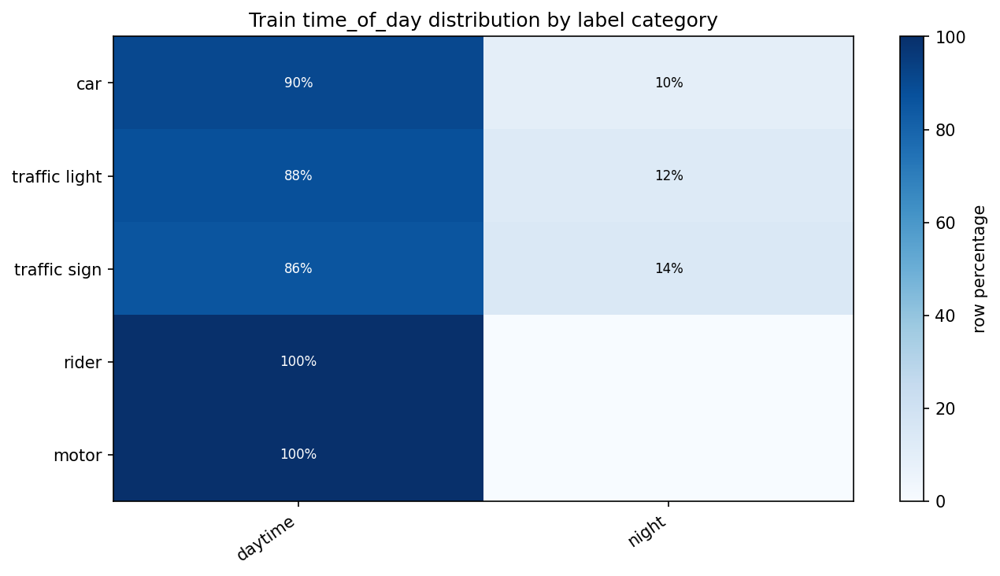
Train label occlusion by class
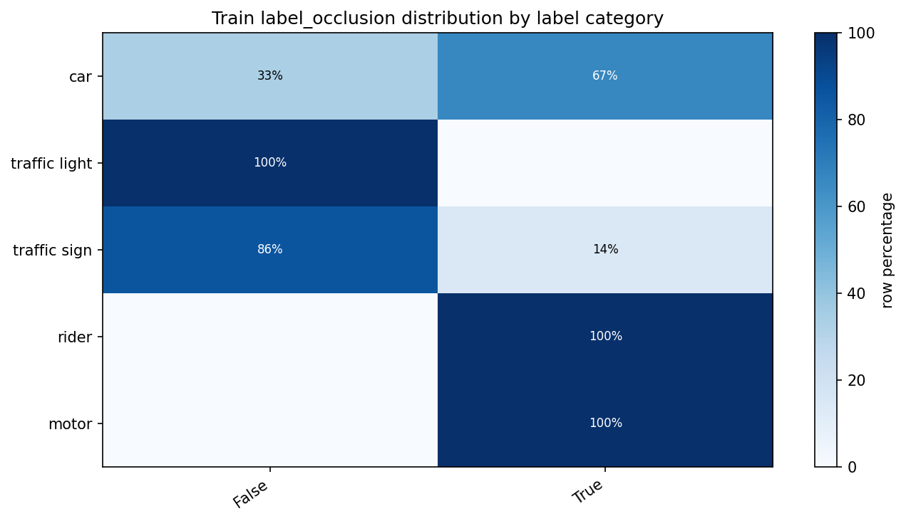
Train label truncation by class
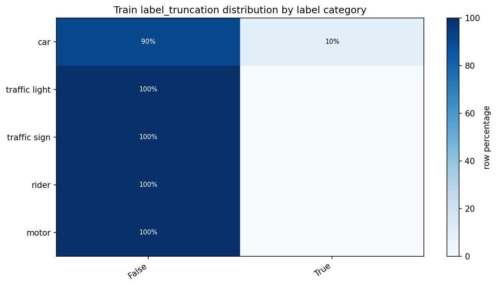
Train label traffic light color by class
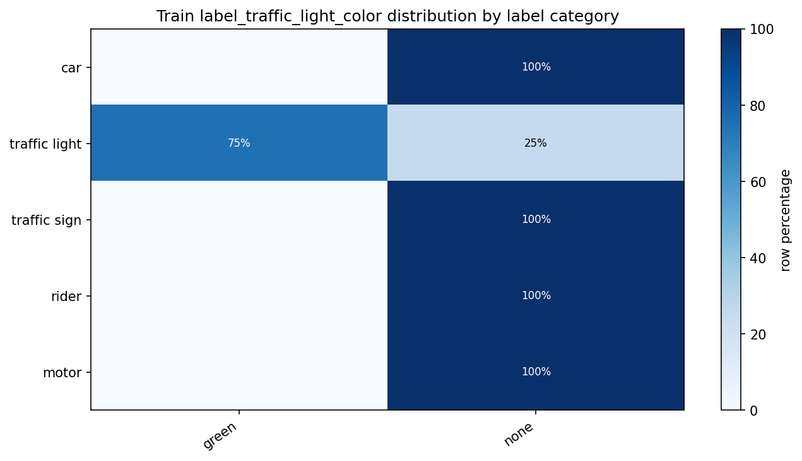
Val weather condition by class
Val scene category by class
Val time of day by class
Val label occlusion by class
Val label truncation by class
Val label traffic light color by class
Category Comparison Table
| split | label_category | object_count | positive_images | total_objects | total_images | object_pct | positive_image_pct |
|---|---|---|---|---|---|---|---|
| train | car | 21 | 2 | 38 | 2 | 55.26 | 100.00 |
| train | traffic light | 8 | 2 | 38 | 2 | 21.05 | 100.00 |
| train | traffic sign | 7 | 2 | 38 | 2 | 18.42 | 100.00 |
| train | motor | 1 | 1 | 38 | 2 | 2.63 | 50.00 |
| train | rider | 1 | 1 | 38 | 2 | 2.63 | 50.00 |
| val | car | 21 | 2 | 38 | 2 | 55.26 | 100.00 |
| val | traffic light | 8 | 2 | 38 | 2 | 21.05 | 100.00 |
| val | traffic sign | 7 | 2 | 38 | 2 | 18.42 | 100.00 |
| val | motor | 1 | 1 | 38 | 2 | 2.63 | 50.00 |
| val | rider | 1 | 1 | 38 | 2 | 2.63 | 50.00 |
Per-Class Positive/Negative Image Counts
| split | label_category | positive_images | negative_images | total_images | positive_image_pct |
|---|---|---|---|---|---|
| train | car | 2 | 0 | 2 | 100.00 |
| train | traffic light | 2 | 0 | 2 | 100.00 |
| train | traffic sign | 2 | 0 | 2 | 100.00 |
| train | motor | 1 | 1 | 2 | 50.00 |
| train | rider | 1 | 1 | 2 | 50.00 |
| val | car | 2 | 0 | 2 | 100.00 |
| val | traffic light | 2 | 0 | 2 | 100.00 |
| val | traffic sign | 2 | 0 | 2 | 100.00 |
| val | motor | 1 | 1 | 2 | 50.00 |
| val | rider | 1 | 1 | 2 | 50.00 |
Largest Train/Val Class Drift
| label_category | train_object_pct | val_object_pct | object_pct_point_diff_val_minus_train | train_positive_image_pct | val_positive_image_pct | image_pct_point_diff_val_minus_train |
|---|---|---|---|---|---|---|
| car | 55.26 | 55.26 | 0.00 | 100.00 | 100.00 | 0.00 |
| motor | 2.63 | 2.63 | 0.00 | 50.00 | 50.00 | 0.00 |
| rider | 2.63 | 2.63 | 0.00 | 50.00 | 50.00 | 0.00 |
| traffic light | 21.05 | 21.05 | 0.00 | 100.00 | 100.00 | 0.00 |
| traffic sign | 18.42 | 18.42 | 0.00 | 100.00 | 100.00 | 0.00 |
Attribute Imbalance Candidates
Rows with high dominant percentages indicate class coverage concentrated in one condition.
| split | label_category | attribute | dominant_value | dominant_count | dominant_pct | object_count |
|---|---|---|---|---|---|---|
| train | motor | weather_condition | overcast | 1 | 100.00 | 1 |
| train | rider | weather_condition | overcast | 1 | 100.00 | 1 |
| train | motor | time_of_day | daytime | 1 | 100.00 | 1 |
| train | rider | time_of_day | daytime | 1 | 100.00 | 1 |
| train | rider | scene_category | city street | 1 | 100.00 | 1 |
| train | motor | scene_category | city street | 1 | 100.00 | 1 |
| val | rider | scene_category | city street | 1 | 100.00 | 1 |
| val | motor | scene_category | city street | 1 | 100.00 | 1 |
| val | rider | time_of_day | daytime | 1 | 100.00 | 1 |
| val | motor | time_of_day | daytime | 1 | 100.00 | 1 |
| val | motor | weather_condition | overcast | 1 | 100.00 | 1 |
| val | rider | weather_condition | overcast | 1 | 100.00 | 1 |
| train | car | time_of_day | daytime | 19 | 90.48 | 21 |
| train | car | weather_condition | overcast | 19 | 90.48 | 21 |
| val | car | time_of_day | daytime | 19 | 90.48 | 21 |
| train | car | scene_category | city street | 19 | 90.48 | 21 |
| val | car | scene_category | city street | 19 | 90.48 | 21 |
| val | car | weather_condition | overcast | 19 | 90.48 | 21 |
| train | traffic light | weather_condition | overcast | 7 | 87.50 | 8 |
| val | traffic light | time_of_day | daytime | 7 | 87.50 | 8 |
| train | traffic light | scene_category | city street | 7 | 87.50 | 8 |
| train | traffic light | time_of_day | daytime | 7 | 87.50 | 8 |
| val | traffic light | weather_condition | overcast | 7 | 87.50 | 8 |
| val | traffic light | scene_category | city street | 7 | 87.50 | 8 |
| train | traffic sign | scene_category | city street | 6 | 85.71 | 7 |
| train | traffic sign | weather_condition | overcast | 6 | 85.71 | 7 |
| val | traffic sign | weather_condition | overcast | 6 | 85.71 | 7 |
| train | traffic sign | time_of_day | daytime | 6 | 85.71 | 7 |
| val | traffic sign | scene_category | city street | 6 | 85.71 | 7 |
| val | traffic sign | time_of_day | daytime | 6 | 85.71 | 7 |